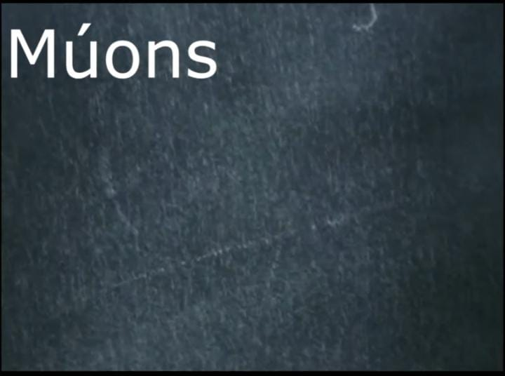
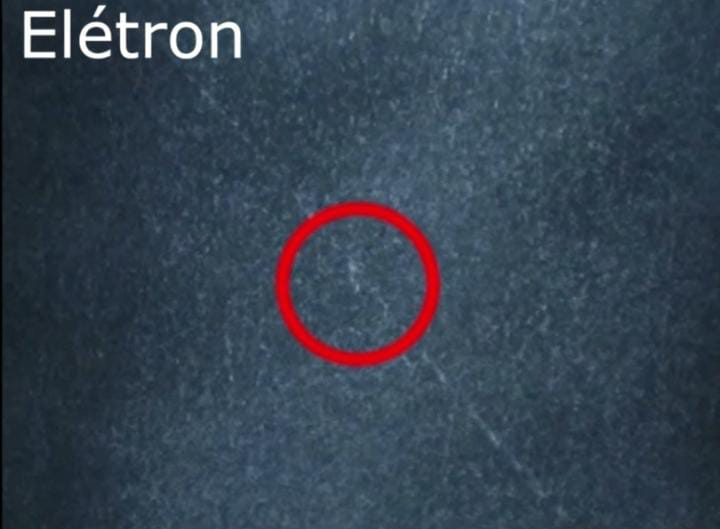
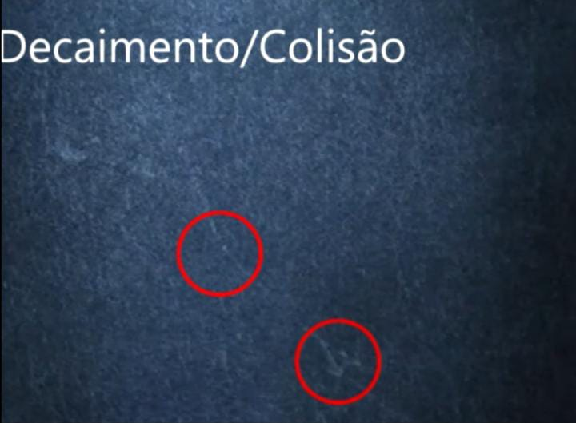

Como ocorrem os processos?
Graças ao gelo seco na base de metal, é criado uma temperatura gradiente(que varia em forma de degradê) na cuba, sendo que o topo da caixa fica em torno de 20 graus e na base - 70 ou - 80 graus
Com isso, o álcool dentro da cuba é encontrado no estado em que as moléculas de água passam com a mesma taxa para a fase líquida e para a fase de vapor ou estado de saturação
A lanterna é usada para a visibilidade das partículas
O álcool que cai do topo da cuba, causa uma ¨chuva¨, fazendo que as linhas nas quais aparecem,mostram o rastro deixado pelas partículas cósmicas
Sendo que o rastro deixado é definido pela massa, energia e carga da partícula
Os Múons
São os rastros finos e extensos, cuja massa é muito superior à do elétron;
Os eletron
Já os rastros em Zig-Zag são os de elétrons de baixa energia
A trajetória dos elétrons não é linear porque a massa deles é muito menor que a massa das moléculas, nas quais eles colidem
Decaimento/Colisão
Alguns rastros seriam característicos de decaimento radioativo ou resultado de colisões entre partículas
